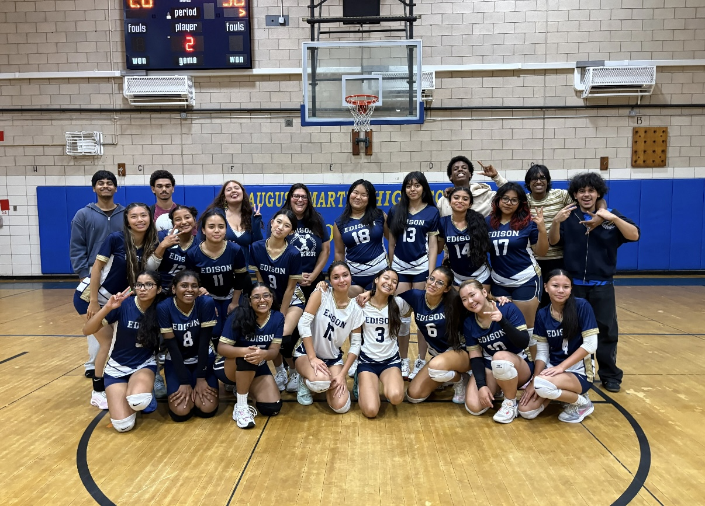
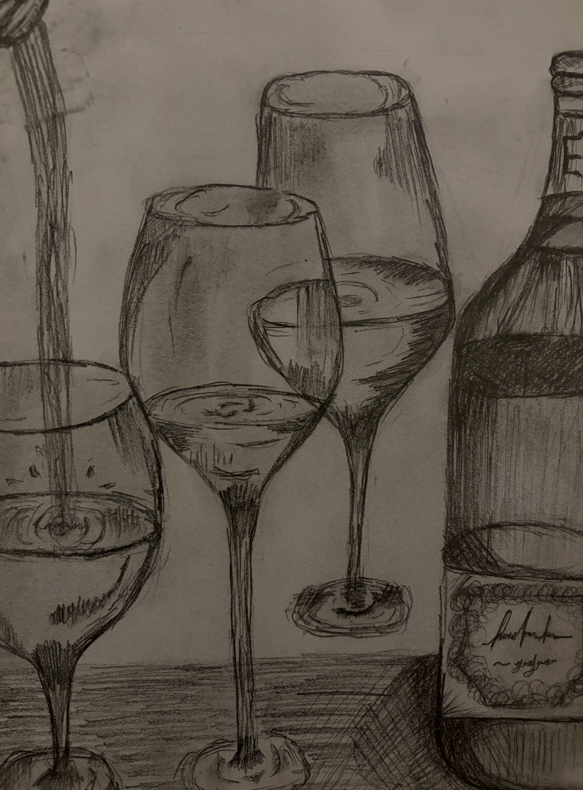

My Friends
My Friends
A film I created summer of 2026. It speaks on the issue of a forgotten language, my forgotten language. K'iche. This film showcases issues brought up from the past and future about not continuing a legacy left behind, a legacy that is meant to flourish.
My cute chud friends!!
Last school year I was able to meet the most amazing people that have not only shown me support but they have shown me endless love and care. They have shown me how to grow as a person and each day they become a part of who I am as a whole. Without them I wouldn't be who I am today because they give me a reason to keep going, keep fighting and stay motivated to live a really good life. My friends are what make me, me. Which is why they are the most important thing about me!

Thomas Edison Volleyball Team
My volleyball team is something I cherish deeply and something that was hard to say goodbye to this year as well. October 27th was my senior year and I have never felt so much love and support from my friends and my school. It was a highlight of my year and something I will never forget. One of our goals this year for the team was to make playoffs and we were able to accomplish that, which ended off our season perfectly.

Hobby 1: Drawing
I have always enjoyed drawing in my free time because it has been something I enjoyed ever since I could pick up a pencil. I always doodled or drawn more cartoonish things but last summer I wanted to challenge myself by creating different types of art using different art styles. I wanted to teach myself how to do more realism art using different teqniques that I learned from previous art lessons.